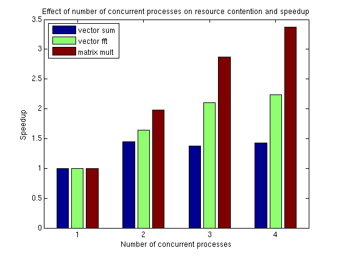
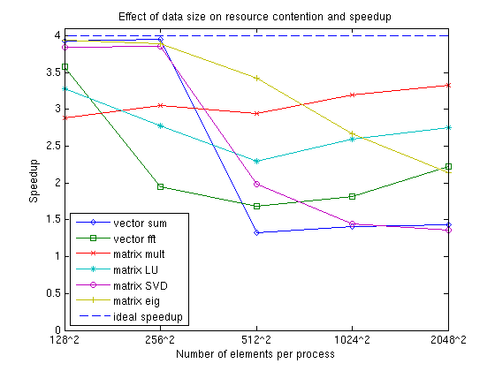

Resource Contention in Task Parallel Problems
This demo looks at why it is so hard to give a concrete answer to the question "How will my (parallel) application perform on my multi-core machine or on my cluster?" The answer most commonly given is "It depends on your application as well as your hardware," and we will try to explain why this is all one can say without more information.
This demo shows the contention for memory access that we can run into on a regular multi-core computer. To demonstrate this, this demo illustrates the case of all the workers running on the same multi-core computer with only one CPU.
Related demos:
Contents
- Analogy for Resource Contention and Efficiency
- Competing for One Pipe: Resource Contention
- Same Hose, Different Distance, Different Results
- Check the Status of the MATLAB® Pool
- Set up Benchmarking Problem
- Repeated Summation
- The Benchmarking Function
- Benchmarking the Summation
- Benchmarking FFT
- Matrix Multiplication
- Investigate the Resource Contention
- Effect on Real Applications
- Measure Effect of Data Size on Resource Contention
- View Resource Contention As a Function of Data Size
To simplify the problem at hand, we will benchmark the computer's ability to execute task parallel problems that do not involve disk IO. This allows us to ignore several factors that might affect parallel applications, such as:
- Amount of interprocess communication
- Network bandwidth and latency for interprocess communication
- Process startup and shutdown times
- Time to dispatch requests to the processes
- Disk IO performance
This leaves us with only:
- Time spent executing task parallel code
Analogy for Resource Contention and Efficiency
To understand why it is worthwhile to perform such a simple benchmark, consider the following example: If one person can fill one bucket of water, carry it some distance, empty it, and take it back to refill it in one minute, how long will it take two people to go the same round trip with one bucket each? This simple analogy closely reflects the task parallel benchmarks in this demo. At first glance, it seems absurd that there should be any decrease in efficiency when two people are simultaneously doing the same thing as compared to one person.
Competing for One Pipe: Resource Contention
If all things are perfect in our previous example, two people complete one loop with a bucket of water each in one minute. Each person quickly fills one bucket, carries the bucket over to the destination, empties it and walks back, and they make sure never to interfere or interrupt one another.
However, imagine that they have to fill the buckets from a single, small water hose. If they arrive at the hose at the same time, one would have to wait. This is one example of a contention for a shared resource. Maybe the two people don't need to simultaneously use the hose, and the hose therefore serves their needs; but if you have 10 people transporting a bucket each, some might always have to wait.
In our case, the water hose corresponds to the computer hardware that we use, in particular the access to the computer memory. If multiple programs are running simultaneously on one CPU core each, and they all need access to data that is stored in the computer's memory, some of the programs may have to wait because of limited memory bandwidth.
Same Hose, Different Distance, Different Results
To take our analogy a bit further, imagine that we have contention at the hose when two people are carrying one bucket each, but then we change the task and ask them to carry the water quite a bit further away from the hose. When performing this modified task, the two people spend a larger proportion of their time doing work, i.e., walking with the buckets, and a smaller proportion of their time contending over the shared resource, the hose. They are therefore less likely to need the hose at the same time, so this modified task has a higher parallel efficiency than the original one.
In the case of the benchmarks in this demo, this corresponds on the one hand to running programs that require lots of access to the computer's memory, but they perform very little work with the data once fetched. If, on the other hand, the programs perform lots of computations with the data, it becomes irrelevant how long it took to fetch the data, the computation time will overshadow the time spent waiting for access to the memory.
The predictability of the memory access of an algorithm also effects how contended the memory access will be. If the memory is accessed in a regular, predictable manner, we will not experience the same amount of contention as when memory is accessed in an irregular manner. This can be seen further below, where, for example, singular value decomposition calculations result in more contention than matrix multiplication.
The code shown in this demo can be found in this function:
function paralleldemo_resource_bench
Check the Status of the MATLAB® Pool
We will use the MATLAB® pool to call our task parallel test functions, so we start by checking whether the pool is open. Note that if the MATLAB pool is using workers running on multiple computers, you may not experience any of the resource contention that we attempt to demonstrate.
poolSize = matlabpool('size'); if poolSize == 0 error('distcomp:demo:poolClosed', ... 'This demo needs an open MATLAB pool to run.'); end
Set up Benchmarking Problem
For our calculations, we create an input matrix large enough that it needs to be brought from the computer's memory onto the CPU each time it is processed. That is, we make it so large that we deliberately cause resource contention.
sz = 2048; m = rand(sz*sz, 1);
Repeated Summation
These computations are very simple: Repeatedly sum a single array. Since the computations are very lightweight, we expect to see resource contention when running multiple copies of this function simultaneously with a large input array.
function sumOp(m) s = 0; for itr = 1:100 % Repeat multiple times to get accurate timing s = s + sum(m); end end
The Benchmarking Function
The core of the timing function consists of a simple spmd statement. Notice that we retain the minimum execution time observed for a given level of concurrency, n. As stated at the beginning, we are benchmarking task parallel problems, measuring only the actual runtime. This means that we are not benchmarking the performance of MATLAB, the Parallel Computing Toolbox™, or the spmd language construct. Rather, we are benchmarking the ability of our OS and hardware to simultaneously run multiple copies of a program.
function time = timingFcn(fcn, numConcurrent) time = zeros(1, length(numConcurrent)); for ind = 1:length(numConcurrent) % Invoke the function handle fcn concurrently on n different labs. % Store the minimum time it takes all to complete. n = numConcurrent(ind); spmd(n) tconcurrent = inf; for itr = 1:5 labBarrier; tic; % Measure only task parallel runtime. fcn(); tAllDone = gop(@max, toc); % Time for all to complete. tconcurrent = min(tconcurrent, tAllDone); end end time(ind) = tconcurrent{1}; clear tconcurrent itr tAllDone; if ind == 1 fprintf('Execution times: %f', time(ind)); else fprintf(', %f', time(ind)); end end fprintf('\n'); end
Benchmarking the Summation
We measure how long it takes to simultaneously evaluate n copies of a summation function for different values of n. Since the summation calculations are so simple, we expect to encounter a resource contention when running multiples of these computations simultaneously on a multi-core CPU. Consequently, we expect it to take longer to evaluate the summation function when we are performing multiple such evaluations concurrently than it takes to execute a single such evaluation on an otherwise idle CPU.
tsum = timingFcn(@() sumOp(m), 1:poolSize);
Execution times: 0.637203, 0.880915, 1.386136, 1.783923
Benchmarking FFT
We now look at a more computationally intensive problem, that of calculating the FFT of our vector. Since FFT is more computationally intensive than summation, we expect that we will not see the same performance degradations when concurrently evaluating multiple calls to the FFT function as we saw with calls to the summation function.
function fftOp(m) for itr = 1:10 % Repeat a few times for accurate timing fft(m); end end tfft = timingFcn(@() fftOp(m), 1:poolSize);
Execution times: 4.338143, 5.270536, 6.201919, 7.758119
Matrix Multiplication
Finally, we look at an even more computationally intensive problem than either FFT or summation. The memory access in matrix multiplication is also very regular, so this problem therefore has the potential to be executed quite efficiently in parallel on a multi-core machine.
function multOp(m) m*m; %#ok<VUNUS> % No need to repeat for accurate timing. end m = reshape(m, sz, sz); tmtimes = timingFcn(@() multOp(m), 1:poolSize); clear m;
Execution times: 1.885753, 1.905606, 1.971765, 2.237002
Investigate the Resource Contention
We create a simple bar chart showing the speedup achieved by running multiple function invocations concurrently. This kind of graph shows the speedup with what is known as weak scaling. Weak scaling is where the number of processes/processors varies, and the problem size on each process/processor is fixed. This has the effect of increasing the total problem size as we increase the number of processes/processors. On the other hand, strong scaling is where the problem size is fixed and the number of processes/processors varies. The effect of this is that as we increase the number of processes/processors, the work done by each process/processor decreases.
allTimes = [tsum(:), tfft(:), tmtimes(:)]; % Normalize the execution times. efficiency = bsxfun(@rdivide, allTimes(1, :), allTimes); speedup = bsxfun(@times, efficiency, (1:length(tsum))'); fig = figure; ax = axes('parent', fig); bar(ax, speedup); legend(ax, 'vector sum', 'vector fft', 'matrix mult', ... 'Location', 'NorthWest') xlabel(ax, 'Number of concurrent processes'); ylabel(ax, 'Speedup') title(ax, ['Effect of number of concurrent processes on resource ' ... 'contention and speedup']);
Effect on Real Applications
Looking at the graph above, we can see that these simple problems scale very differently on the same computer. When we also look at the fact that other problems and different computers may show very different behavior, it should become clear why it is impossible to give a general answer to the question "How will my (parallel) application perform on my multi-core machine or on my cluster?" The answer to that question truly depends on the application and the hardware in question.
Measure Effect of Data Size on Resource Contention
The resource contention does not depend only on the function that we are executing, but also on the size of the data that we process. To demonstrate this, we measure the execution times of various functions with various sizes of input data. As before, we are benchmarking the ability of our hardware to perform these computations concurrently, and we are not benchmarking MATLAB or its algorithms. We use more functions than before so that we can investigate the effects of different memory access patterns as well as the effects of different data sizes.
szs = [128, 256, 512, 1024, 2048];
description = {'vector sum', 'vector fft', 'matrix mult', 'matrix LU', ...
'matrix SVD', 'matrix eig'};
We loop through the different data sizes and the functions we want to benchmark, and measure the speedup observed. We compare the sequential execution time to the time it takes to execute concurrently as many invocations as we have labs in the pool.
speedup = zeros(length(szs), length(description)); for i = 1:length(szs) sz = szs(i); fprintf('Using matrices of size %d-by-%d.\n', sz, sz); j = 1; for f = [{@sumOp; sz^2; 1}, {@fftOp; sz^2; 1}, {@multOp; sz; sz}, ... {@lu; sz; sz}, {@svd; sz; sz}, {@eig; sz; sz}] op = f{1}; nrows = f{2}; ncols = f{3}; m = rand(nrows, ncols); % Compare sequential execution to execution on all labs. tcurr = timingFcn(@() op(m), [1, poolSize]); speedup(i, j) = tcurr(1)/tcurr(2)*poolSize; j = j + 1; end end
Using matrices of size 128-by-128. Execution times: 0.002461, 0.002505 Execution times: 0.004186, 0.004684 Execution times: 0.000589, 0.000816 Execution times: 0.000494, 0.000602 Execution times: 0.012475, 0.013005 Execution times: 0.015861, 0.016121 Using matrices of size 256-by-256. Execution times: 0.008382, 0.008492 Execution times: 0.023118, 0.047389 Execution times: 0.003879, 0.005085 Execution times: 0.002714, 0.003911 Execution times: 0.051679, 0.053699 Execution times: 0.112030, 0.115047 Using matrices of size 512-by-512. Execution times: 0.033740, 0.101810 Execution times: 0.130116, 0.309099 Execution times: 0.030558, 0.041467 Execution times: 0.018242, 0.031770 Execution times: 0.235492, 0.473487 Execution times: 0.900429, 1.050568 Using matrices of size 1024-by-1024. Execution times: 0.162986, 0.462689 Execution times: 0.666461, 1.466693 Execution times: 0.238914, 0.299394 Execution times: 0.132432, 0.203780 Execution times: 1.930244, 5.328927 Execution times: 3.984348, 5.983968 Using matrices of size 2048-by-2048. Execution times: 0.642871, 1.798004 Execution times: 4.330922, 7.784146 Execution times: 1.893678, 2.274880 Execution times: 0.889805, 1.295439 Execution times: 13.886217, 40.705017 Execution times: 18.960359, 35.433499
View Resource Contention As a Function of Data Size
When we look at the results, we have to keep in mind how a function interacts with the cache on a CPU. For small data sizes, we are always working out of the CPU cache for all these functions. In that case, we expect to see perfect speedup. When the input data is too large to fit into the CPU cache, we start seeing the performance degradation caused by contention for memory access. This happens in several ways, but for this demo, the following are the most important:
- The function performs a relatively small amount of computation with the data. The sum of a vector is a good example of that.
- The function accesses data in small chunks or has irregular data access patterns. The following graph shows that with eigenvalue calculations (eig) and singular value decomposition (svd).
fig = figure; ax = axes('parent', fig); plot(ax, speedup); lines = get(ax, 'Children'); set(lines, {'Marker'}, {'+', 'o', '*', 'x', 's', 'd'}'); hold(ax, 'on'); plot(ax, repmat(poolSize, 1, length(szs)), '--'); hold(ax, 'off'); legend(ax, [description, {'ideal speedup'}], 'Location', 'SouthWest'); set(ax, 'XTick', 1:length(szs)); set(ax, 'XTickLabel', arrayfun(@(x) {sprintf('%d^2', x)}, szs)) ylim = get(ax, 'YLim'); set(ax, 'YLim', [0, max([poolSize + 0.1, ylim(2)])]); xlabel(ax, 'Number of elements per process'); ylabel(ax, 'Speedup') title(ax, 'Effect of data size on resource contention and speedup');
end